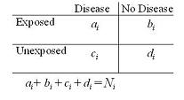
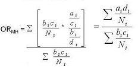
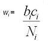
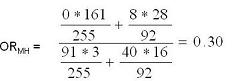

Summary Estimators: Mantel-Haenszel Method
Lead Author(s): Jeff Martin, MD
This is one method for calculating summary adjusted estimators when making adjustments in the measure of association.
Summary Estimators: Mantel-Haenszel Method
Given the Woolf's Method problem with cells of zero, the Mantel-Haenszel method is more widely used.
Data for Mantel-Haenszel's Method

Step 1 - Weight Using the Native Odds Ratio Scale

Here, we are working with the plain old native odds ratio scale.
- The weight is bc/N which happens to be the inverse of the variance of each stratum under the conditions when the OR=1.
- This is one of those things you are going to have to accept without proof.

In other words, the weight is related to the variance, but a special form of the variance, that is, when there is no association.
Example: Summary Adjusted Effect Using Mantel-Haenszel Method
In the example of AZT use we need to determine the summary adjusted effect, using the Mantel-Haenszel Method. We obtain an summary estimate for the association between AZT use and HIV seroconversion after adjusting for severity of needlestick.

The summary adjusted estimate is 0.3.
- This is an example of negative confounding.
The crude estimate was 0.6 and not even statistically significant.
- After adjustment for severity of needlestick the OR is now an impressive 0.3.
- There is a 70% reduction in odds of HIV seroconversion associated with using AZT.
Variance Associated with No Effect
Now, you might wonder why we using a variance associated with an odds ratio of no effect if indeed there is an effect in the stratum.
- It turns out that despite this apparent illogic, this weight works quite well compared to what is considered the real gold standard approach of using a technique called maximum likelihood estimation to find the adjusted measure.
- Because Mantel Haenszel works about as well in many situations, and is much simpler, it is often favored.
Note: another intuitive approach to understanding the MH formula is to note that ad/n is a pretty good approximation of the numerator ad in an odds ratio and bc/N is a pretty good approximation of the denominator of the odds ratio.
Pros and Cons of Mantel-Haenszel's Methods
The Mantel-Haenszel technique, although not as straightforward conceptually as the Woolf technique, which directly uses stratum-specific variances, has many advantages:
- Relatively resistant to the effects of large numbers of strata with few observations
- Resistant to cells with a value of “0”
- Most commonly used approach to forming adjusted summary estimates.